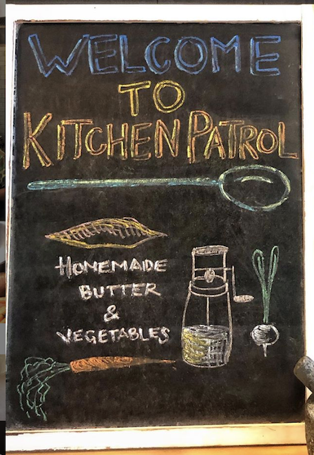
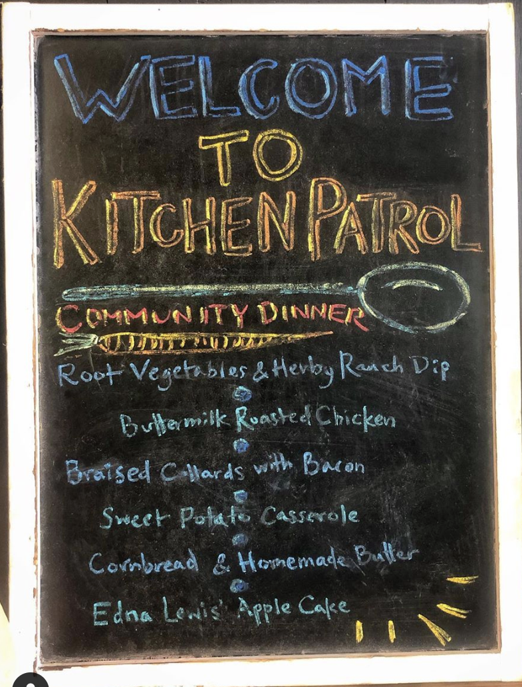
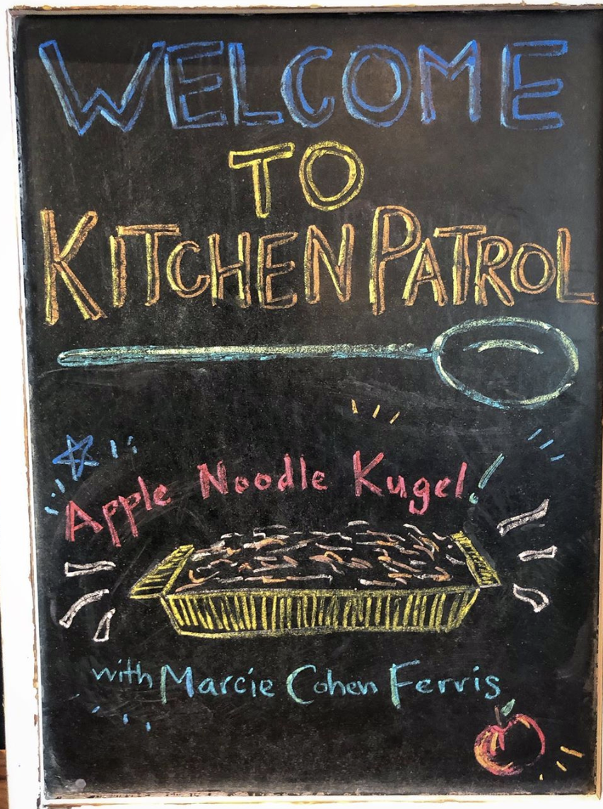
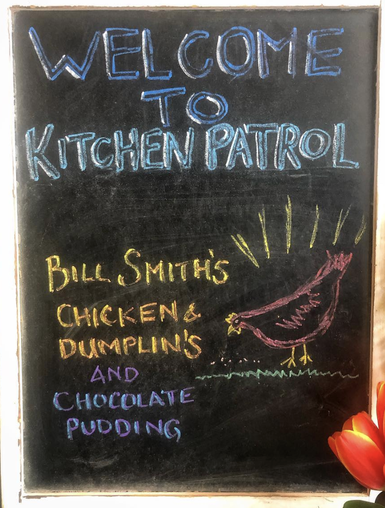
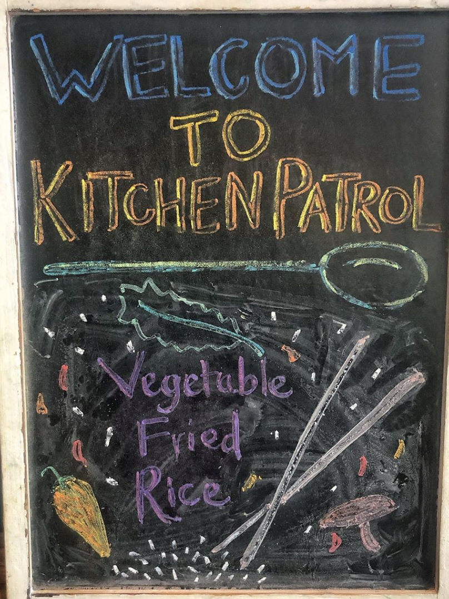

Outreach
Our Community
Food is not the only thing we are focused on. Our restaurant also reaches out to the community and does volunteer work throughout neighborhoods. Our work consists of gardening and making our community look beautiful, cooking for local groups of children to create a cause, and helping children find out their aspirations and dreams by introducing them to life as a chef. Below are some of the menu specials that these students created.





Social Media
To learn more about our Community Outreach Program, follow us below on Social Media.